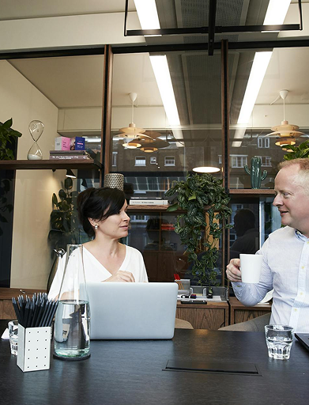

La Tramitación de la Nacionalidad Española es el proceso que permite a personas extranjeras obtener la ciudadanía española, con todos sus derechos y obligaciones. Las vías principales incluyen residencia.
Discover the advantages of working with a dedicated legal team that turns complex immigration processes into clear, successful outcomes.
Our team of immigration lawyers in Málaga provides step-by-step assistance through every stage of your immigration process. We turn complex legal procedures into clear, understandable actions so you always know what to expect.
Every client’s story is unique. That’s why we take the time to understand your individual situation and tailor our approach to your specific goals.

With hundreds of satisfied clients, Immiworld has built a strong track record of achieving positive results.
Our team of immigration lawyers in Málaga provides step-by-step assistance through every stage of your immigration process.
Immigration requirements differ from country to country, but most applications follow a similar foundation. Applicants typically need a valid passport, proof of financial stability, educational records, and a clean criminal background. Some programs may also require a medical examination or proof of language proficiency. In many cases, demonstrating relevant work experience or securing a job offer can significantly increase eligibility. Each immigration pathway—whether for skilled workers, students, or family sponsorship—comes with its own criteria, so it’s important to review the specific guidelines of the program you’re applying for.
Immigration requirements differ from country to country, but most applications follow a similar foundation. Applicants typically need a valid passport, proof of financial stability, educational records, and a clean criminal background. Some programs may also require a medical examination or proof of language proficiency. In many cases, demonstrating relevant work experience or securing a job offer can significantly increase eligibility. Each immigration pathway—whether for skilled workers, students, or family sponsorship—comes with its own criteria, so it’s important to review the specific guidelines of the program you’re applying for.